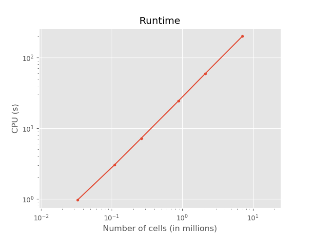

Note
Click here to download the full example code
1. CPU and RAM usage¶
Measuring and estimating runtime and memory usage of emg3d as a function of
model size.
The actually computed results further down are only for relatively small models, as these examples in the gallery are run very often. Here therefore the results of two larger runs that were run on a cluster:
Example CPU¶

Example RAM¶

Check-out the old versions for more information with regards to the above figures:
import emg3d
import numpy as np
import matplotlib.pyplot as plt
from memory_profiler import memory_usage
plt.style.use('ggplot')
Model¶
This is the actual model it runs. Adjust this to your needs.
def compute(nx):
"""Simple computation routine.
- Model size is nx * nx * nx, centered around the origin.
- Source is at the origin, x-directed.
- Frequency is 1 Hz.
- Homogenous space of 1 Ohm.m.
"""
# Grid
hx = np.ones(nx)*50
x0 = -nx//2*50
grid = emg3d.TensorMesh([hx, hx, hx], x0=(x0, x0, x0))
# Source location and frequency
src = [0, 0, 0, 0, 0]
freq = 1.0
# Resistivity model
res = 1.
# Model and source field
model = emg3d.Model(grid, property_x=res, mapping='Resistivity')
sfield = emg3d.get_source_field(grid, src, freq=freq, strength=0)
# Compute the field
_, inf = emg3d.solve(grid, model, sfield, verb=1, return_info=True)
return inf['time']
Loop over model sizes¶
These are the actual nx-sizes it tests. Adjust to your needs.
nsizes = np.array([32, 48, 64, 96, 128, 192]) # , 256, 384, 512, 768, 1024])
memory = np.zeros(nsizes.shape)
runtime = np.zeros(nsizes.shape)
# Loop over nx
for i, nx in enumerate(nsizes):
print(f" => {nx}^3 = {nx**3:12,d} cells")
mem, time = memory_usage((compute, (nx, ), {}), retval=True)
memory[i] = max(mem)
runtime[i] = time
Out:
=> 32^3 = 32,768 cells
=> 48^3 = 110,592 cells
=> 64^3 = 262,144 cells
=> 96^3 = 884,736 cells
=> 128^3 = 2,097,152 cells
=> 192^3 = 7,077,888 cells
Plot CPU¶
Plot RAM¶
emg3d.Report('memory_profiler')
| Wed Jul 29 23:01:04 2020 CEST | |||||
| OS | Linux | CPU(s) | 4 | Machine | x86_64 |
| Architecture | 64bit | RAM | 15.5 GB | Environment | Python |
| Python 3.8.3 (default, Jul 2 2020, 16:21:59) [GCC 7.3.0] | |||||
| memory_profiler | 0.57.0 | numpy | 1.18.5 | scipy | 1.5.0 |
| numba | 0.50.1 | emg3d | 0.12.0 | empymod | 2.0.2 |
| xarray | 0.16.0 | discretize | 0.4.15 | h5py | 2.10.0 |
| matplotlib | 3.2.2 | IPython | 7.16.1 | ||
| Intel(R) Math Kernel Library Version 2020.0.1 Product Build 20200208 for Intel(R) 64 architecture applications | |||||
Total running time of the script: ( 4 minutes 57.263 seconds)
Estimated memory usage: 1677 MB